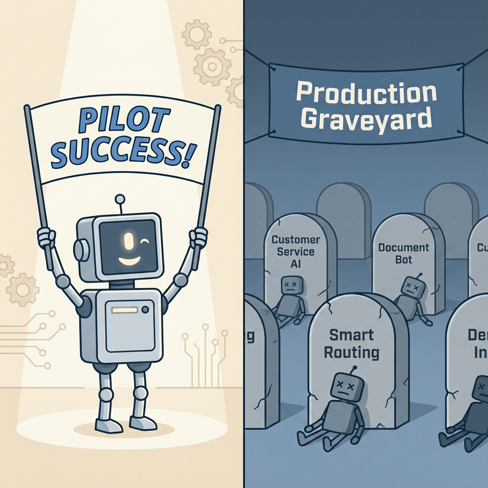

Why 73% of GenAI Pilots Fail to Reach Production

TL;DR
- 73-95% of GenAI pilots never reach production—not because the technology fails, but because organizations skip the fundamentals
- Five failure patterns cause most failures: wrong problem, bad data, pilot paralysis, infrastructure gaps, and organizational unreadiness
- Reframe the question: Ask “What problems were too expensive to fix?” not “Where can we use AI?”
- Answer five questions before your next pilot—if you can’t, you’re building a demo, not a product
Your GenAI pilot is probably going to fail.
Not because the technology doesn’t work. Not because you picked the wrong model. Because 73% of AI initiatives never escape the sandbox—and the real numbers are likely worse.
I’ve watched this pattern repeat across dozens of companies. The technology demos beautifully. Executives get excited. Six months later, the pilot is quietly shelved while everyone moves on to the next shiny thing.
Enterprise buyers poured $4.6 billion into GenAI applications in 2024, an 8x increase from the year before. Yet according to RAND Corporation research, more than 80% of AI projects fail. That’s twice the failure rate of IT projects that don’t involve AI.
The problem isn’t the AI. It’s how we’re approaching it.
How bad is it?
The failure rates are worse than most executives realize—and multiple independent studies confirm the pattern.
MIT’s 2025 GenAI Divide report found that 60% of organizations evaluated enterprise AI systems, but only 20% reached the pilot stage. Of those, just 5% made it to production. That’s a 95% failure rate from evaluation to deployment.
Gartner predicts that 30% of GenAI projects will be abandoned after proof of concept by the end of 2025. IDC found that companies ran an average of 23 POCs between 2023 and 2024—but only 3 reached production.
The math is brutal. If you’re running GenAI pilots, the odds are stacked against you.
Unless you understand what separates the 27% that succeed.
The 73% failure rate isn’t a technology problem—it’s a strategy problem.
— Clarke Bishop
Why projects really fail
RAND researchers interviewed 65 experienced data scientists and engineers to understand why AI projects fail. They identified five root causes—and most struggling organizations hit multiple patterns simultaneously.
Pattern 1: Solving the wrong problem
Teams build what’s technically interesting, not what the business needs. There’s a persistent disconnect between technical staff and business stakeholders about what problem actually needs solving.
I call this “technology bias”—chasing the latest models instead of solving real problems. When your AI team is more excited about fine-tuning techniques than about the business outcome, you have a problem.
Pattern 2: The data quality crisis
“Beneath every AI failure lies a data quality problem.” That’s from Informatica, and it matches what I’ve seen repeatedly.
Gartner estimates that through 2025, at least 50% of GenAI projects will be abandoned at the pilot stage due to poor data quality. Organizations consistently underestimate data preparation requirements. They budget for model development but not for the unglamorous work of cleaning, labeling, and organizing their data.
Pattern 3: Pilot paralysis
POCs run in safe sandboxes with no clear path to production. Integration challenges—authentication, compliance workflows, user training—get ignored until someone asks for a go-live date.
The technology works in isolation. But when it’s time to connect to real systems with real users, everything falls apart. The pilot becomes permanent, never graduating to production.
Pattern 4: Infrastructure gaps
Models that work in Jupyter notebooks fail at scale. Organizations lack MLOps pipelines, deployment infrastructure, and monitoring capabilities.
Gartner found it takes an average of 8 months to go from prototype to production. That’s not because the AI is slow—it’s because the infrastructure to deploy, monitor, and maintain AI systems doesn’t exist.
Pattern 5: Organizational unreadiness
This is the silent killer. Teams accumulate “implementation debt”—shortcuts and oversights that compound until they derail the project.
There’s a skills gap between data scientists who build models and production engineers who deploy systems. Nobody owns the model post-launch. The organization isn’t ready for AI, even if the technology is ready for the organization.
Which of these patterns do you recognize? Most struggling organizations hit two or three simultaneously.
What the 27% do differently
Successful GenAI deployments share three characteristics. None of them are about picking the right model.
OBJECTION: “We already know to start with a business problem. Everyone says that.”
I’m sure you do. And yet most pilots still fail. Knowing isn’t the same as doing. The companies that succeed don’t just say they start with business problems—they refuse to write a single line of code until they can quantify exactly what the current problem costs.
Start with business pain, not technology
The most reliable predictor of success is starting with process bottlenecks that already cost real money.
Successful teams ask “What’s costing us?” not “Where can we use AI?” Salesforce’s legal team built a GenAI assistant for contract drafting and trimmed outside-counsel spend by over $5 million. Lloyds Banking Group reduced income verification from days to seconds. Both started with expensive, painful problems.
But here’s the thing: “start with a business problem” is incomplete. Many executives lack vision about what’s actually possible. They think “automation” when they should think “capability.”
Here’s a better question: What could you do with an army of smart, minimum-wage employees? What problems have you been ignoring because they were too expensive to fix?
This reframe surfaces latent demand—problems that got written off as “too expensive” are now viable. It shifts the mindset from “replace what we do” to “do what we couldn’t.”
If you can’t quantify the cost of the current problem, you’re not ready for an AI solution.
— Clarke Bishop
Right-size the problem
Successful deployments have three things in common: lots of content to process, clear boundaries on what the AI does, and obvious connection points to existing systems.
Don’t boil the ocean. Start narrow, prove value, then expand.
MIT’s research found that vendor solutions succeed twice as often as internal builds (67% vs 33%). That’s a big gap. Before building custom, ask whether you’re solving a problem that really requires proprietary AI—or whether you’re building because building feels more impressive than buying.
Plan for production from day one
Treat AI as a lifecycle project, not a prototype.
Involve DevOps, SRE, and IT partners early. Build deployment, monitoring, and governance into the pilot scope—not as afterthoughts. Define who owns the model post-launch before you build it.
Accenture’s Knowledge Assist is a good example. They used a multi-model architecture with Claude-2, Amazon Titan, Pinecone, and Kendra. Results: 50% reduction in new hire training time, 40% drop in query escalations. The success factor wasn’t the models—it was clear metrics, defined scope, and production architecture planned from the start.
Five questions before your next pilot
Before launching your next GenAI pilot, run it through this filter. If you can’t answer these questions clearly, you’re building a demo, not a product.
1. What specific business problem does this solve?
If you can’t quantify the cost of the current problem, stop.
“We want to use AI for customer service” is not a clear problem definition. “We’re spending $2M per year on Tier 1 support tickets that could be automated” is a clear business problem.
2. Do you have the data—and is it clean?
Audit data availability and quality before committing to a pilot. Budget 40-60% of project time for data preparation.
If your data isn’t ready, that’s your first project—not AI.
3. What does production look like?
Define the deployment environment, integration points, and scale requirements upfront. Who will own it post-launch? Who monitors performance? Who retrains the model when it drifts?
If you can’t answer these, you’re not ready for production.
4. Is your organization ready?
Do stakeholders understand what AI can and can’t do? Is there executive sponsorship for the full lifecycle, not just the pilot?
RAND recommends committing to at least 12 months on a specific problem. AI projects that hop between use cases rarely succeed.
5. Build or buy?
Internal builds succeed 33% of the time. Vendor solutions succeed 67%.
Ask: Does this need to be proprietary, or can you buy and customize? Often the best answer is buy the platform, build the application layer.
The real question
The 73% failure rate isn’t a technology problem. It’s a strategy problem.
The companies successfully deploying GenAI treat it as a business initiative with clear ROI targets, not a technology experiment with vague potential. They start with expensive problems, right-size their scope, and plan for production from day one.
Every failed pilot is an expensive lesson. The question isn’t whether GenAI can deliver value—it clearly can for the companies doing it right. The question is whether your organization is set up to be in the 27%.
Takeaways
- 73% of AI projects fail—and it’s rarely a technology problem
- Start with expensive business problems, not “where can we use AI?”
- Vendor solutions succeed twice as often as internal builds
- Plan for production from day one—not as an afterthought
- If you can’t quantify the cost of the current problem, you’re not ready
Evaluating GenAI initiatives? If you want an outside perspective on production readiness, that’s exactly the kind of strategic assessment I do as a fractional CTO. Let’s talk.